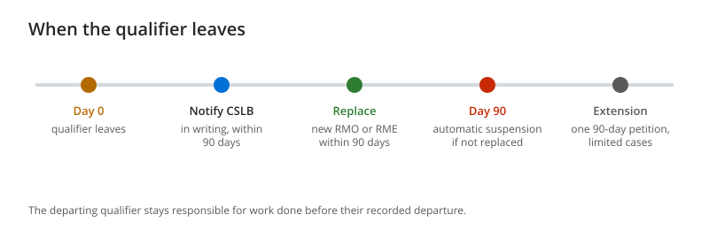

The license and the qualifier: RMO and RME
In one sentence: a company's license rests on one person, the qualifier, and if that person leaves you have 90 days to replace them before the license is suspended.

Who the qualifier is
The qualifier is the person listed with CSLB who met the experience and exam requirements for the license classification. Depending on the structure, it can be:
- the owner of a sole ownership;
- a qualifying partner;
- an RMO (responsible managing officer) of a corporation, or the LLC equivalents (responsible managing member or manager);
- an RME (responsible managing employee): an employee who qualifies the license.
RME rules worth knowing
- An RME must be a bona fide employee actively involved in the business. CSLB defines this in hours per week; check the current rule before you hire one.
- An RME can qualify only one active license at a time.
- When the license is qualified by an RME, a $25,000 bond of qualifying individual is usually required in addition to the $25,000 contractor bond.
When the qualifier leaves
- The company or the qualifier must notify CSLB in writing within 90 days of the departure.
- The company must replace the qualifier within 90 days. If not, the license is automatically suspended (or the classification removed).
- One 90-day extension can be requested in limited circumstances, and the request must arrive within the first 90 days.
- The departing qualifier stays responsible for work done before their recorded departure date.
See Contractor licenses for public works for the classifications themselves.
Protecting the company
- If the qualifier is not an owner, have a second qualified person in the company or a plan to find one.
- Put the notice and cooperation duties in the RME's employment agreement.
- Keep a copy of the license record and check it after any change.
Official sources
CSLB: Change in personnel · CSLB.
Common mistakes
- Relying on a single RME with no backup plan.
- Missing the 90-day window and working on a suspended license.
- Forgetting the qualifying individual bond when switching to an RME.